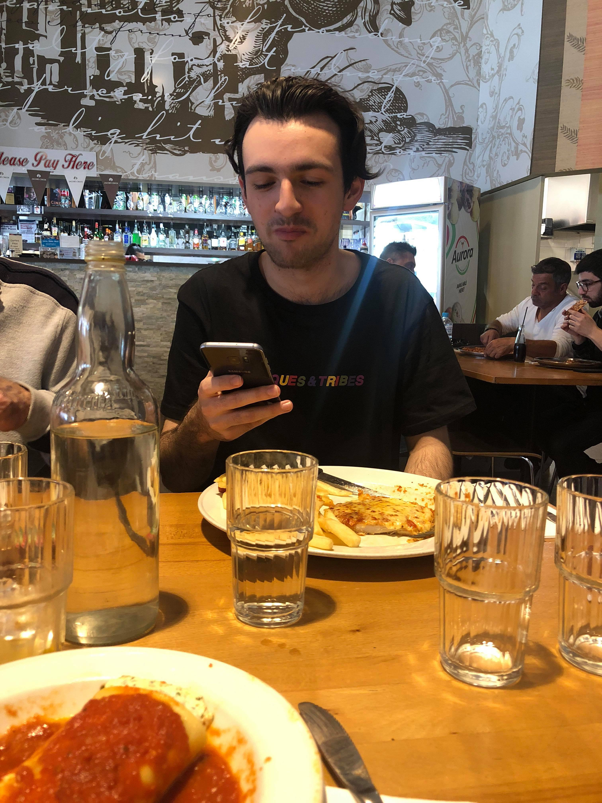

BEN INVERNO
ABOUT
Hey there! My name is Benjamin Inverno. I am currently 20 years old, born and raised in Melbourne, Australia. I am currently undergoing a Bachelor of Information Technology at Royal Melbourne Institute of Technology, Melbourne. I've had an interest in computers and IT since a very young age. My first memories of using a computer was using Paint to draw pictures of houses when I was 5 years old. Since then they have become a big area of interest in my life.
For the past three years (on and off) i've been teaching myself programming in my spare time. I thoroughly enjoy writing in Python (most of my projects are in Python) and more recently creating webpages and working with Javascript.
Outside of programming, I enjoy playing videogames (I've been playing League of Legends, Rocket League and Overwatch for a while) and reading in my spare time. We also have two cats and a dog that I love to play with!
I currently work at McDonalds, and have been working there on and off for the past 4 years. I'm always looking for an opportunity to jump into the Information Technology industry, especially while i'm studying, and I have a big interest speccifically in cloud computing.
PROJECTS
BMI Calculator
A very BMI Calculator simple made using Python, Tkinter and SQLite. Majority of this application was developed in 2016 for my Information Technology Class in High School. The application takes your measurements and stores weight and height and gives you a BMI based on inputted options. It then writes it to a SQLite database for storage.
Mancala
A game of Mancala played in the Python console. Forked from another users Mancala game and edited and fixed myself until it was playable, allows you to play two player Mancala with someone.
D&D Roller
Small Dungeons and Dragons python application using SQLite to allow you to easily roll attacks for Monsters or NPC's in Dungeons & Dragons 5th Edition. Uses user input to let you put the stats of monsters in and store it using SQLite to a database. After adding monsters in it lets you roll a rounds worth of attacks for all monsters.
TVShowInformation
Python module that allows you to easily access and use TV show information from the TVMaze API. Eventually this will be used to make a TV Show Tracker in Python.
CONTACT
If you'd like to contact me for any reason, please feel free to send me an email! I've also linked my Twitter and my Github below if you'd like to check out any of my projects or send me a tweet. My LinkedIn has also been included for career-related purposes. I've also included a link to download my resume if you're interested.